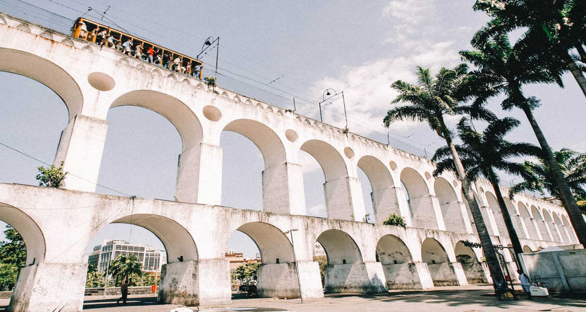
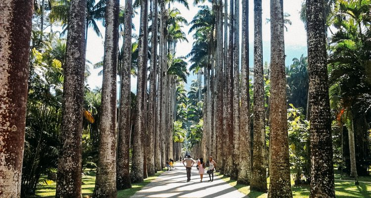

Cristo Redentor

Principal cartão-postal da cidade, o Cristo Redentor foi eleito pelos cariocas como a “Maravilha do Rio”.
O monumento fica no alto do morro do Corcovado, a 700 metros de altitude, onde um mirante panorâmico descortina grande parte do Rio de Janeiro.
Inaugurada em 1931, a imagem do Cristo Redentor é considerada a maior estátua em estilo art déco do mundo.
Visível de diversos pontos da cidade.
O Cristo redentor sempre é assunto. O que será que estão falando a
respeito no Twitter.

Lapa

Depois de um dia de trabalho, nada melhor do que um bom chopp,
um petisco e uma conversa em uma mesa de bar. Opções de sobra,
Um dos bares mais famosos é o Bar da Cachaça, geralmente nesse espaço a galera fica de pé ou se tiver sorte de conseguir uma das mesas que ficam na calçada melhor, haha.
O local oferece uma variedade de cachaças entre 2000 rótulos, um paraíso para quem aprecia a bebida.
Veja quais os melhores bares e restaurantes da região no
Melhores bares da Lapa.
![]()
O Jardim Botânico

O jardim tem obras do início do século XVI, guardando um rico patrimônio histórico e cultural.
Entre os monumentos destacam-se as estátuas de Eco e Narciso de mestre Valentim, o Portal da Academia de Belas Artes, projetado por Grandjean de Montigny, e o Jardim Japonês, criado em 1935 a partir da doação de 65 espécies de plantas típicas do Japão.
O parque também é um excelente local para observação de pássaros, pois conta com mais de cem diferentes espécies nas copas e troncos de suas árvores.
Veja no mapa
como chegar ao Jardim Botânico.